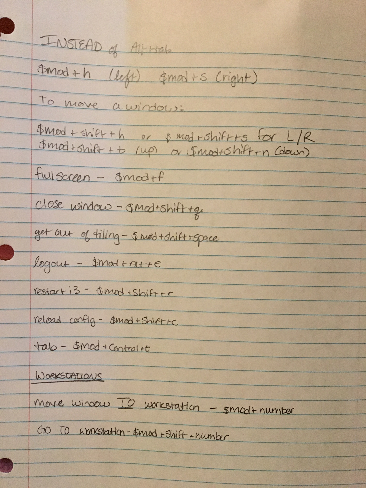

[2.15.18]
i3 Window Manager and Notification Daemon Dunst
I haven't been doing a ton of super nerd things lately because of school and work, so I decided to play around with setting up the i3 window manager; one, because I wanted to learn a new way to navigate my computer, and two, because I've been bugged to try it one too many times. XD
So! I installed i3 with:
sudo apt-get install i3
Then restarted my computer. When logging back in, there should be a
little gear icon that shows up right by the "login" button. Click on
the gear and i3 should be an option to choose from.
A window should pop up asking what you want your $mod key to be. the $mod key is the key that will start all of your keybindings. i3 window manager is all about keybindings, so if you want a fun learning curve and hate using the mouse, this is the window manager for you!
At first I was terrified because I couldn't figure out how to get a
terminal set up. Then my friend advised the keybinding, $mod+enter.
I had chosen the Win key as my $mod key, so it was win+enter.
:)
Once I had my terminal up and running, I had to fix the scaling on
my mac with its fancy HiDPI screen. But other than that, the next
step was to jump into the config file. The config syntax wasn't hard
to learn, and you can find my config file here:
https://github.com/thallia/dotconfig/i3/config
As long as you can get a terminal and start working with the config (in spacemacs, emacs, vim, nano, whatever!) you're basically using i3, you just have to keep remembering the keybindings to get where you want to go.
Configuring all the colors is so much fun. I ended up making a keybinding cheat sheet while I'm in the works of getting them all memorized.
I've found so far that in some cases I like working in tiled setup (when working on coding projects) and fullscreen+tabbed in day-to-day usage. :)
If you have trouble maneuvering around and starting programs, I'd recommend installing rofi and binding it to a comfortable keybinding position (mine is Control+space). Rofi is like dmenu, but much prettier. It'll pop up and allow you to execute programs like firefox, screenshot, and more, all without touching the mouse, which I appreciate.
I wasn't fond of the notifications in i3, so I took to the interwebs and found Dunst. Dunst is a cool little notification daemon that you can use to replace the default i3 daemon, plus it's configurable! *laughs maniacally*
You can get dunst by:
git clone https://github.com/dunst-project/dunst.git
cd dunst
make
sudo make install
And that should be the end of that. I highly recommend
installing all the dependencies before trying to make,
or else you'll get some nasty errors.
The next step is to switch the i3 notification daemon from the
default to Dunst.
cd into /usr/share/dbus-1/services/, then
find a file that looks similar to org.freedesktop.Notifications
and sudo vim into it.
After Exec, replace Exec=/usr/lib/xfce4/notifyd/xfce4-notifyd
with:
Exec=/usr/bin/dunst.
Save and quit!
Once completed, sudo mv /path/to/dunst/folder /usr/share/
Then copy over the config file:
sudo cp /usr/share/dunst/dunstrc
/home/username/.config/dunst/dunstrc.
Now you can configure everything to your heart's content! Here's a good article to get you in on the basics, and here's my dunst config file:
https://github.com/thallia/dotconfig/dunst/dunstrc
Happy configging!
{thallia}